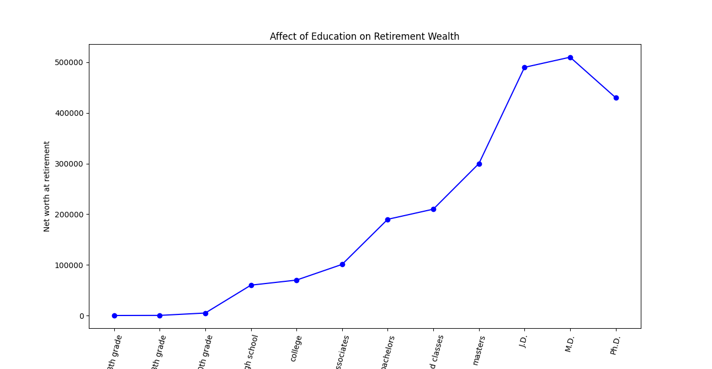
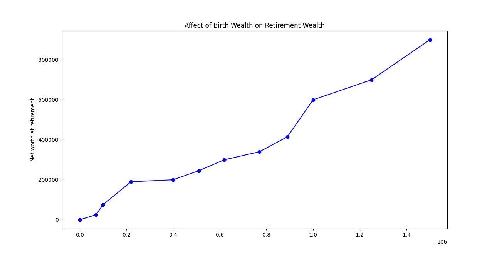

Work hard and become wealthy?
Maybe so, but work alone might not cut it. The following graphs[1] show various paths to prosperity.
More advanced schooling helps. If you can avoid the crushing debt of student loans, all the better. Try to find a major that you're good at and that is good to you.
For accruing wealth, what's even better than education? Being born wealthy. In the graph below, note how the birthright high enders are able to become more wealthy than the education high enders. So before being born, shop around.
